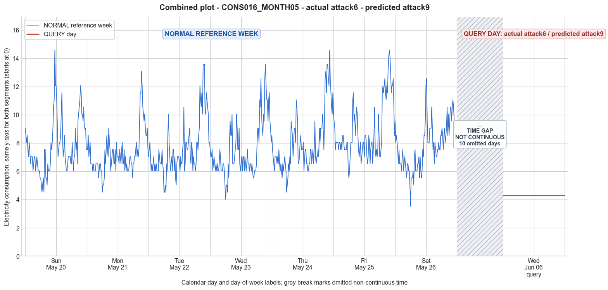

CONS016_MONTH05 · actual attack6 · predicted attack9
- Pair
- CONS016_MONTH05
- GT
- attack6
- Prediction
- attack9
- Binary GT
- attacked
- Binary Prediction
- attacked
- Source
- E010
- Parse
- stored
- Date
- 2012-06-06
- Weekday
- Wednesday
- Latency
- 1.02 min
- Tokens
- 7506

Final output
Classification: - Manipulated Identified Attack: - Most Likely: Attack 9 - Confidence: High - Reasoning: The query day shows a perfectly flat consumption profile (all 96 readings are exactly 4.30, std=0). This directly matches Attack 9, which replaces all samples with a constant value (the average daily energy consumption), eliminating all trends and variance. Attack 0 (zero replacement) would produce all zeros, not 4.30. Attack 1 (multiply by constant factor) would preserve the original consumption shape, which is entirely absent. Attack 6 (cut-off replacement) would leave values below the cut-off unchanged, but the reference days contain values below 4.30, so a true cut-off could not yield a uniform constant at that level. No other attack generates a perfectly flat, non-zero constant across the entire day. Attack_Behavior_Explanation: - How consumption values are manipulated relative to the normal week: All original 15-minute consumption values are replaced by a single constant value of 4.30. The normal week exhibits clear daily patterns with early-morning lows (≈3.5–5.5) and afternoon/evening peaks (≈12–14.5), and typical daily means around 7.3–8.9. The query day shows no variation whatsoever. - Impact on magnitude and trend: Magnitude is reduced compared to normal daily averages; the constant 4.30 is about 45–55% of a typical day’s mean. The original trend (time-of-day peaks and troughs) is completely erased, resulting in a flat line. - Possible technical causes: The most likely technical cause is false data injection, where an attacker substitutes meter readings with a pre‑defined constant value to mask actual usage. This is not consistent with meter bypass or magnetic interference, which would produce partial or proportional reductions, not a perfect constant.
Prompt
You are a domain expert in smart grid security and electricity theft analysis, with deep knowledge of non-technical loss (NTL) attack patterns in smart meters. You are given: 1. A plot of one week of original (normal) energy consumption for a smart meter, provided as context for the customer's typical consumption behavior. 2. A plot of one day of energy consumption for the same smart meter, which may or may not be manipulated. Below are common attack types, each defined by how consumption values are altered, their impact on magnitude and trend, and their possible technical causes. Attack 0: Generated by replacing all electricity consumption samples with zero values for the entire observation duration. Simulates a scenario where no energy usage is reported at all. May be caused by a total meter bypass or severe meter malfunction. Completely eliminates both the trend and magnitude of the consumption profile. Attack 1: Multiplies the actual energy consumption by a constant random value between (0,1). The lower the factor, the higher the severity. Can be triggered by meter bypass, magnetic interference, reverse current, and false data injection. The consumption trend remains the same but the magnitude is uniformly reduced. Attack 2: Generated by replacing consumption samples with zeros for a random duration. Also known as an on-off attack. Can be caused by full meter bypass, false data injection, and reverse current. Changes both the trend and amplitude. Attack 3: The actual consumption is multiplied by different random factors between 0 and 1, with a unique factor per sample. Similar to Attack 1 but the scaling factor varies per reading. Caused by meter bypass, magnetic interference, and reverse current. Changes both the trend and amplitude. Attack 4: Simulates energy theft over a randomly selected period within the observation window. All measurements in that period are reduced. Caused by meter bypass, magnetic interference, reverse current, and false data injection. Changes both the trend and amplitude. Attack 5: Each sample is replaced by a false value obtained by multiplying the average normal consumption by a random variable between 0 and 1, with a different variable per sample. Caused by false data injection. Produces a completely different pattern from the original consumption profile, changing both trend and magnitude. Attack 6: A random cut-off point is selected and all consumption values above it are replaced by that cut-off value. The attacker avoids exceeding a predefined maximum limit. Mainly caused by false data injection. Changes both the trend and amplitude. Attack 7: A random cut-off point is subtracted from each sample; if the result is negative, zero is reported. Similar to Attack 6 but replaces exceeding values with zero instead of the cut-off point. May be caused by false data injection or total meter bypass. Does not change the trend but reduces overall consumption. Attack 9: All samples are replaced by the average daily energy consumption, resulting in a flat constant profile. Easily detectable because constant consumption does not reflect normal customer behavior. Caused by false data injection. Eliminates all trends. Attack 10: Reverses the consumption pattern without reducing the total amount. Applicable when the electricity company uses time-varying pricing, allowing the attacker to shift high consumption to off-peak periods. Caused by false data injection. Changes the trend without decreasing total consumption. Attack 12: The attacker replaces their consumption pattern with that of a lower-consuming user. The legitimate user unknowingly pays the adversary's electricity bill. Caused by false data injection. Attack IEEE: For each 15-minute interval across the entire day, the consumer either reports the actual electricity consumption or substitutes it with zero. The result is a profile where some intervals reflect real consumption while others are zeroed out, creating an irregular pattern across the full day. May be caused by false data injection. Changes both the trend and amplitude. Given the two plots, determine: 1. Whether the day is attacked or original - compare the flagged day against the normal week and assess whether the consumption pattern is consistent with normal behavior or shows signs of manipulation. If the day is consistent with the customer's typical consumption behavior, classify it as original and provide no further analysis. If manipulation is detected, proceed to point 2. 2. Which attack type this most likely is - identify the single most probable attack and justify your choice based on how the flagged day deviates from the normal week. 3. The behavior of the identified attack - explain how the consumption values are manipulated, their impact on magnitude and trend, and the possible technical causes behind this type of attack. Output Format: Classification: - Original | Manipulated Identified Attack: (fill only if manipulated) - Most Likely: Attack X - Confidence: High | Medium | Low - Reasoning: Why it matches Attack X and why Attack Y and Attack Z were ruled out (list top 2 alternatives considered) Attack_Behavior_Explanation: (fill only if manipulated) - How consumption values are manipulated relative to the normal week - Impact on magnitude and trend - Possible technical causes
Reasoning content
We are asked to analyze a query day compared to a reference week. The query day is constant at 4.30 across all 96 readings (std=0, min=4.30, max=4.30, mean=4.30). The reference week shows daily patterns with varying consumption, typically minima around 3.52-5.53, maxima around 12.56-14.57, and means around 7.3-8.9. The query day has no variation, a constant value, and a mean of 4.30 which is lower than the reference days' means. This constant profile matches Attack 9: "All samples are replaced by the average daily energy consumption, resulting in a flat constant profile." But the value isn't necessarily the average; Attack 9 replaces with the average daily energy consumption. However, the query day constant value 4.30 might be the average of some reference. Check: The reference week daily means: 7.77, 7.28, 7.59, 7.54, 8.02, 8.87, 7.76. None near 4.30. So not an exact average. Attack 5: Each sample replaced by false value obtained by multiplying the average normal consumption by a random variable between 0 and 1, with different variable per sample. But here it's constant, not varying. Attack 0: Replace all with zero. Not zero but 4.30. Attack 7: subtract cutoff, but then zero if negative; would cause some zeros, not constant. Attack 2: zeros for random duration, not constant. Attack 6: cutoff replacement; would cause constant above cutoff? Actually Attack 6 replaces values above a cutoff with the cutoff, so if the cutoff was below all values, all values become the cutoff, resulting in a constant. The description: "A random cut-off point is selected and all consumption values above it are replaced by that cut-off value." If the cutoff is low enough, all values could be replaced, yielding a constant. But here the constant is 4.30, which is above many reference minima (some min 3.52, 4.02, 4.52). The reference week has days with minima as low as 3.52. If cutoff was, say, 4.30, then any value above 4.30 would be capped, but values below would remain. In the query day, all values are exactly 4.30, even those that would normally be below (like early morning low values around 3.5-4.5). To get all exactly 4.30, the cutoff would need to be 4.30 and all actual values would need to be >=4.30? But the reference data has points below 4.30, e.g., Day 0 has 3.52? Actually Day 0 min is 4.52. Day 1 min 4.52. Day 2 min 4.52. Day 3 min 4.02. Day 4 min 4.52. Day 5 min 5.53. Day 6 min 3.52. So many days have values below 4.30. So if attack 6 was applied, those values would stay as they are, not be raised to 4.30. So the flat constant of exactly 4.30 across all intervals suggests a deliberate replacement, not a cap. Attack 9: flat constant profile by replacing all samples with the average daily energy consumption. That average would normally be calculated from the original daily data. But 4.30 is not the average of any reference day. Could be a different day's average? The query day metadata says it's day_id=3, month_id=6, dow=2 (Wednesday?), but the provided reference week is month_id=5. So maybe the attacker used a different average? Attack 9 description: "All samples are replaced by the average daily energy consumption, resulting in a flat constant profile." It doesn't specify whose average. The attacker might use the average of the meter's historical consumption or some other. 4.30 seems low; perhaps it's the daily average from a low-consumption period? In the reference week, none of the daily means are that low. So it could be an average from a different period, or maybe the attacker set it arbitrarily. Attack 12: replace with pattern of lower-consuming user; that wouldn't be constant. Attack 10: reverse pattern, not constant. Attack 4: reduce over a period, not constant. Attack 5: "Each sample is replaced by a false value obtained by multiplying the average normal consumption by a random variable between 0 and 1, with a different variable per sample." If the random variable were constant across samples, it would be Attack 1? Attack 1 multiplies by constant random value. So Attack 1 multiplies by a single factor between 0 and 1, preserving trend but reducing magnitude uniformly. If the original pattern had variations, a constant factor would keep the shape but scale down. The result would not be completely flat unless the original was flat, which it isn't. So Attack 1 would yield a profile with the same shape but lower values. Here it's completely flat, no shape at all. So Attack 1 is ruled out. Attack 7: subtract cutoff, but that would create zeros for all values below cutoff, and reduced values for others. Not all constant. Attack 2: on-off attack, not constant. Attack 0: zeros, not constant. So the constant profile strongly suggests Attack 9 (flat constant profile) or possibly Attack 6 with a very low cutoff that was below the minimum? If the cutoff is below any actual consumption value, all values become the cutoff, but Attack 6 replaces values above cutoff with cutoff; values below remain. If the cutoff were below the minimum, like 0, then no values would be above it, so no change, not constant. To get all constant, the cutoff must be at or above the minimum and all values must be above it, which is not the case because minima are below 4.30. So Attack 6 cannot yield a constant above the minimum. Could it be a data corruption? Not an attack defined. Attack 9 is the clear match: flat constant profile. Confidence: High, because the pattern is exactly constant (std=0), which matches Attack 9's description of "flat constant profile". It eliminates all trends. The value 4.30 is not the mean of any reference day, but the attack could have been generated using average from another day or contrived average. The important point is the flatness. Thus, Classification: Manipulated. Identified Attack: Attack 9. Reasoning: It matches the flat constant consumption; all readings identical. Attack 0 would be all zeros, ruled out. Attack 1 would preserve shape, but shape is gone. Attack 6 would cap values above a cutoff but leave lower ones, not constant. Attack 2 and 4 produce irregular patterns. Attack 5 would vary per sample, not constant. Attack 12 would match another user's pattern, not constant. So Attack 9 is the only one producing a perfect constant. Confidence: High. Attack_Behavior_Explanation: All consumption samples are replaced with a constant value (4.30) for the entire day, resulting in a flat profile with zero variance. The magnitude is reduced relative to normal daily averages (which are ~7.3-8.9) and the typical daily trend (morning/evening peaks) is completely eliminated. Possible technical cause: false data injection, where the attacker reports a fixed value to hide actual consumption. Thus, final answer.